第 3 章 例子
……在理解一个模型所依据的简化假设，并能检验这些假设是否有效之前，不要使用任何模型。口号是：只按说明使用。不要把自己限制在单一模型上：同一现象的不同方面，可能需要不止一个模型来理解。口号是：让多配偶制合法化。
本章给出一组例子，覆盖科学和工程中的许多不同领域。后文和习题会反复使用这些例子来说明不同概念。初读本书时，读者可以只关注少数几个自己已有经验或直觉较多的例子，以便在熟悉语境中理解状态、输入、输出和动态这些概念。
3.1 巡航控制
汽车巡航控制系统是日常生活中常见的反馈系统。这个系统试图在存在扰动时保持恒定速度，扰动主要来自道路坡度变化。控制器通过测量汽车速度并适当调节节流阀，来补偿这些未知因素。
为了建模系统，我们从图 3.1 的框图开始。令 \(v\) 表示汽车速度，\(v_r\) 表示期望速度，也就是参考速度。控制器通常是第 1 章简要介绍过的比例积分 PI 类型，它接收信号 \(v\) 与 \(v_r\)，产生控制信号 \(u\)，并把该信号送到控制节流阀位置的执行器。节流阀进而控制发动机输出转矩 \(T\)，转矩通过齿轮和车轮传递，产生驱动汽车的力 \(F\)。由于道路坡度变化、滚动阻力和气动力，还会出现扰动力 \(F_d\)。巡航控制器还具有人机接口，使驾驶员能够设定和修改期望速度。系统也有一些功能，例如一旦触碰刹车就断开巡航控制。
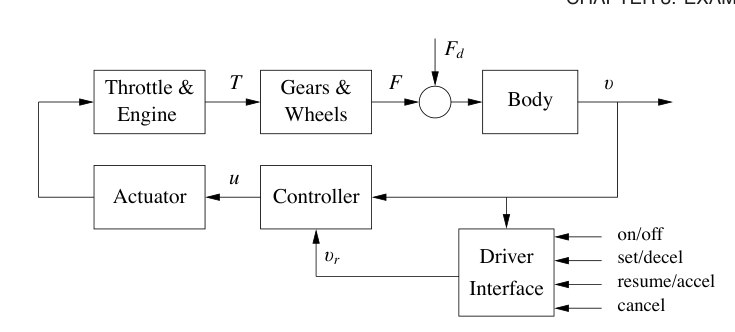
系统有许多单独部件，包括执行器、发动机、传动系统、车轮和车身，因此详细模型可能非常复杂。尽管如此，设计巡航控制器所需的模型可以很简单。
为了建立数学模型，我们从车身的受力平衡开始。令 \(v\) 为汽车速度，\(m\) 为总质量，包括乘客，\(F\) 为车轮与道路接触产生的力，\(F_d\) 为由重力、摩擦和空气阻力造成的扰动力。汽车运动方程很简单：
力 \(F\) 由发动机产生。发动机转矩与燃油喷射率成正比，而燃油喷射率本身又与控制节流阀位置的控制信号 \(0\le u\le 1\) 成正比。转矩还取决于发动机转速 \(\omega\)。全节流阀下转矩的一个简单表示为
其中最大转矩 \(T_m\) 在发动机转速 \(\omega_m\) 处取得。典型参数为 \(T_m=190\) Nm，\(\omega_m=420\) rad/s，约为 4000 RPM，\(\beta=0.4\)。令 \(n\) 为传动比，\(r\) 为车轮半径。发动机转速与速度之间满足
驱动力可写为
1 到 5 挡的 \(\alpha_n\) 典型值为 \(\alpha_1=40\)、\(\alpha_2=25\)、\(\alpha_3=16\)、\(\alpha_4=12\)、\(\alpha_5=10\)。\(\alpha_n\) 的倒数可解释为有效车轮半径。图 3.2 显示转矩如何随发动机转速和车辆速度变化。图中可见，挡位的作用是把转矩曲线展平，使几乎整个速度范围内都能获得接近满值的转矩。
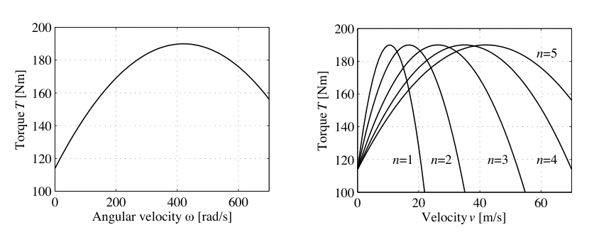
扰动力 \(F_d\) 主要有三个组成部分：由重力造成的 \(F_g\)、由滚动摩擦造成的 \(F_r\)，以及空气阻力 \(F_a\)。令道路坡度为 \(\theta\)，重力给出力 \(F_g=mg\sin\theta\)，如图 3.3a 所示，其中 \(g=9.8\ \text{m/s}^2\) 是重力常数。滚动摩擦的简单模型为
其中 \(C_r\) 是滚动摩擦系数，\(\operatorname{sgn}(v)\) 是 \(v\) 的符号，即 \(\pm1\)，当 \(v=0\) 时为 0。滚动摩擦系数的典型值为 \(C_r=0.01\)。最后，空气阻力与速度平方成正比：
其中 \(\rho\) 是空气密度，\(C_d\) 是取决于形状的空气阻力系数，\(A\) 是汽车迎风面积。典型参数为 \(\rho=1.3\ \text{kg/m}^3\)、\(C_d=0.32\)、\(A=2.4\ \text{m}^2\)。
综合起来，汽车可由下式建模：
其中函数 \(T\) 由式 (3.2) 给出。模型 (3.3) 是一阶动态系统。状态是汽车速度 \(v\)，它也是输出。输入是控制节流阀位置的信号 \(u\)，扰动是力 \(F_d\)，它依赖道路坡度。由于转矩曲线、重力项，以及滚动摩擦和空气阻力的非线性特征，系统是非线性的。参数也可能变化，例如汽车质量取决于乘客人数和车内载荷。
在这个模型上，我们加入一个反馈控制器，试图在存在扰动时调节汽车速度。这里使用比例积分控制器，其形式为
这个控制器本身也可以作为输入输出动态系统实现。定义控制器状态 \(z\)，并实现微分方程
其中 \(v_r\) 是期望速度，也就是参考速度。如第 1.5 节简要讨论的，积分器由状态 \(z\) 表示，它保证即使存在扰动或建模误差，稳态误差也会被驱动到零。PI 控制器设计是第 10 章的主题。图 3.3b 显示由式 (3.3) 和式 (3.4) 组成的闭环系统遇到坡道时的响应。图中显示，即使坡度足以使节流阀从 0.17 变到几乎全开，最大速度误差也小于 1 m/s，并且约 20 s 后恢复期望速度。
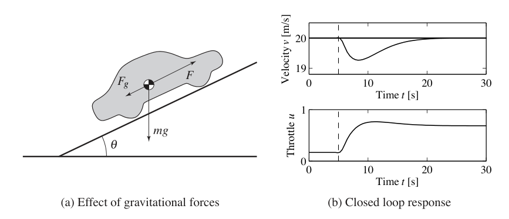
推导模型 (3.3) 时做了许多近似。这样一个看起来复杂的系统竟能由如此简单的模型描述，或许令人意外。重要的是，我们必须把模型使用限制在图 2.15b 所概念化的不确定性柠檬范围内。这个模型不适用于节流阀的非常快速变化，因为我们忽略了发动机动态的细节；也不适用于非常缓慢的变化，因为发动机性质会随多年使用而改变。尽管如此，这个模型对巡航控制系统设计非常有用。后文会看到，原因在于反馈系统内在的鲁棒性：即使模型并不完全准确，我们仍可用它设计控制器，并利用控制器中的反馈管理系统不确定性。
巡航控制系统还有一个人机接口，使驾驶员能够与系统通信。这个系统有许多实现方式，其中一种如图 3.4 所示。系统有四个按钮：开关、设定或减速、恢复或加速、取消。系统运行由一个有限状态机管理，该状态机控制 PI 控制器和参考生成器的模式。控制器和参考生成器的实现会在第 10 章更充分地讨论。
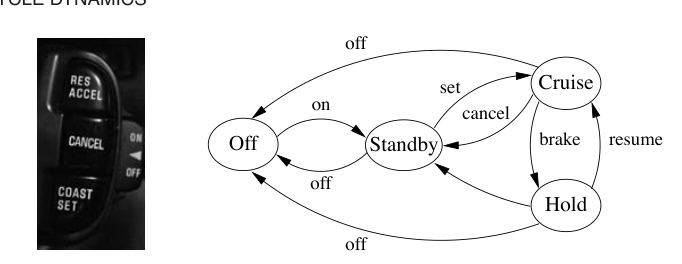
汽车系统中的控制应用远远超过这里描述的简单巡航控制系统。应用包括排放控制、牵引力控制、动力控制，尤其是在混合动力车辆中，以及自适应巡航控制。Kiencke 和 Nielsen 的书 [124] 以及 Powers 等人的综述论文 [22, 166] 详细讨论了许多汽车应用。
3.2 自行车动态
自行车是一个有趣的动态系统，它的一个关键性质来自前叉设计所形成的反馈机制。自行车的详细模型很复杂，因为系统有许多自由度，几何形状也复杂。不过，简单模型已经能提供大量洞见。
为了推导运动方程，我们假设自行车在水平 \(xy\) 平面上滚动。引入一个固定在自行车上的坐标系，其中 \(\xi\) 轴穿过车轮与地面接触点，\(\eta\) 轴水平，\(\zeta\) 轴竖直，如图 3.5 所示。令 \(v_0\) 为自行车在后轮处的速度，\(b\) 为轴距，\(\phi\) 为倾斜角，\(\delta\) 为转向角。该坐标系围绕点 \(O\) 以角速度 \(\omega=v_0\delta/b\) 旋转，固定在自行车上的观察者会感受到由坐标系运动引起的力。
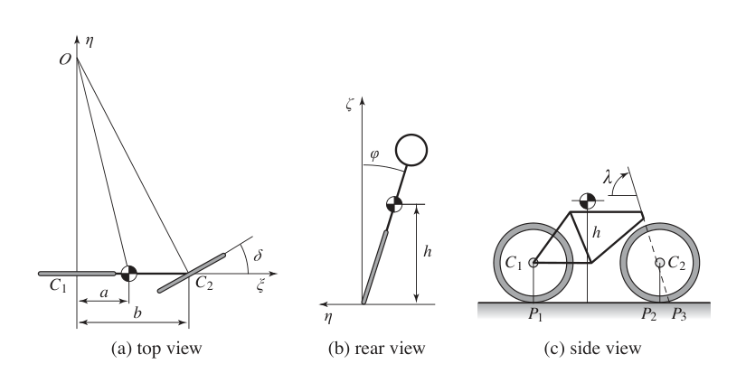
自行车的倾斜运动类似于倒立摆，如图 3.5b 后视图所示。为了建模倾斜，考虑一个刚体，它由车轮、骑行者和前叉组件相对车架固定后得到。令 \(m\) 为系统总质量，\(J\) 为该刚体相对于 \(\xi\) 轴的转动惯量，\(D\) 为相对于 \(\xi\zeta\) 轴的惯性积。此外，令质心相对于后轮接触点 \(P_1\) 的 \(\xi\) 与 \(\zeta\) 坐标分别为 \(a\) 和 \(h\)。我们有 \(J\approx mh^2\)，\(D=mah\)。作用在系统上的力矩来自重力和向心作用。假设转向角 \(\delta\) 很小，运动方程变为
项 \(mgh\sin\phi\) 是重力产生的力矩。含有 \(\delta\) 及其导数的项是转向产生的力矩，其中 \((Dv_0/b)d\delta/dt\) 来自惯性力，\((mv_0^2h/b)\delta\) 来自向心力。
转向角受到骑行者施加到车把上的力矩影响。由于转向轴倾斜以及前叉形状，前轮与道路接触点 \(P_2\) 位于前轮组件转轴之后，如图 3.5c 所示。前轮接触点 \(P_2\) 与前叉组件转轴投影点 \(P_3\) 之间的距离 \(c\) 称为曳距。自行车转向性质关键依赖曳距。大曳距提高稳定性，但降低转向灵活性。
前叉设计带来的一个后果是，转向角 \(\delta\) 同时受到转向力矩 \(T\) 和车架倾斜 \(\phi\) 的影响。这意味着带前叉的自行车是一个反馈系统，如图 3.6 的框图所示。转向角 \(\delta\) 影响倾斜角 \(\phi\)，倾斜角又影响转向角，由此产生反馈推理中典型的循环因果关系。对具有正曳距的前叉来说，自行车会朝倾斜方向转向，产生试图减小倾斜的离心力。在某些条件下，这种反馈确实可以稳定自行车。
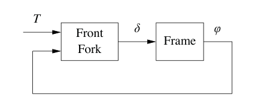
一个粗略经验模型可通过假设前叉方框可建模为静态系统得到：
这个模型忽略了前叉动态、轮胎道路相互作用，以及参数依赖速度这一事实。更准确的模型称为 Whipple 模型，它通过前叉和车架的刚体动态得到。假设角度很小，该模型变为
其中 \(2\times2\) 矩阵 \(M,C,K_0,K_2\) 的元素依赖自行车几何和质量分布。注意，这个形式与第 2 章中弹簧质量系统以及例 2.1 中平衡系统的形式有些相似。即便这个更复杂的模型也不准确，因为它忽略了轮胎与道路之间的相互作用；若要纳入这一点，需要两个额外状态变量。再次，图 2.15b 中的不确定性柠檬为理解这些假设下模型有效性提供了框架。
D. Wilson [202] 与 Herlihy [98] 的书对自行车的发展给出了有趣介绍。模型 (3.7) 由 Whipple 在 1899 年的一篇论文中提出 [197]。论文 [17] 给出了自行车建模的更多细节，并包含许多参考文献。
3.3 运算放大器电路
运算放大器，简称运放，是 Black 反馈放大器的现代表现形式。它是广泛用于仪器、控制和通信的通用部件，也是模拟计算中的关键元件。图 3.7 给出了运算放大器的示意图。放大器有一个反相输入 \(v_-\)、一个同相输入 \(v_+\) 和一个输出 \(v_{\mathrm{out}}\)。它还有供电电压 \(e_-\)、\(e_+\) 的连接，以及零点调整，也称失调调零。一个简单模型假设输入电流 \(i_-\) 与 \(i_+\) 为零，并且输出由如下静态关系给出：
其中 \(\operatorname{sat}\) 表示饱和函数
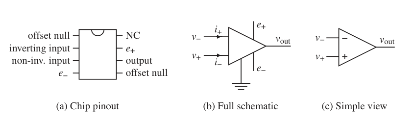
我们假设增益 \(k\) 很大，范围为 \(10^6\) 到 \(10^8\)，并且电压 \(v_{\min}\) 和 \(v_{\max}\) 满足
因此它们处于供电电压范围内。更准确的模型可通过用图 3.8 所示的光滑函数替代饱和函数获得。对小输入信号，放大器特性 (3.8) 是线性的：
由于开环增益 \(k\) 很大，系统保持线性的输入信号范围非常小。
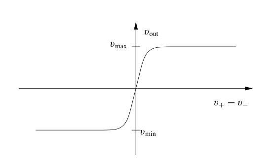
把基本运算放大器置于反馈中，可以得到一个简单放大器，如图 3.9a 所示。为在线性范围内建模反馈放大器，我们假设电流 \(i_0=i_-+i_+\) 为零，且放大器增益非常大，使电压 \(v=v_- - v_+\) 也为零。由欧姆定律可知，电阻 \(R_1\) 与 \(R_2\) 上的电流满足
因此放大器的闭环增益为
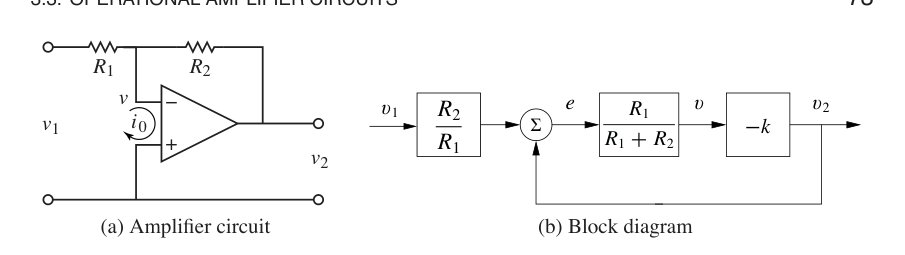
更准确的模型仍忽略电流 \(i_0\)，但假设电压 \(v\) 很小但不可忽略。电流平衡为
假设放大器工作在线性范围内，并使用式 (3.10)，闭环系统增益变为
如果运算放大器开环增益 \(k\) 很大，则闭环增益 \(k_{\mathrm{cl}}\) 与式 (3.11) 给出的简单模型相同。注意，闭环增益只依赖无源元件，而 \(k\) 的变化对闭环增益只有很小影响。例如，当 \(k=10^6\)、\(R_2/R_1=100\) 时，\(k\) 变化 100% 只会使闭环增益变化 0.01%。灵敏度的大幅降低很好地说明了反馈如何用不确定部件构造精确系统。在这个例子中，反馈用高增益和低鲁棒性换取低增益和高鲁棒性。式 (3.13) 正是 Black 发明反馈放大器时受到启发的公式 [35]，见第 12 章开头引文。
为图 3.9a 中的反馈放大器建立框图很有启发性。为此，我们把纯放大器表示为一个方框，其输入为 \(v\)，输出为 \(v_2\)。为了完成框图，必须描述 \(v\) 如何依赖 \(v_1\) 和 \(v_2\)。由式 (3.12) 解出 \(v\)，得到
于是得到图 3.9b 所示框图。图中清楚显示系统具有反馈，并且从 \(v_2\) 到 \(v\) 的增益为 \(R_1/(R_1+R_2)\)，这个增益也可以直接从图 3.9a 的电路图读出。如果回路稳定且放大器增益很大，则误差 \(e\) 很小，我们得到 \(v_2=-(R_2/R_1)v_1\)。注意，电阻 \(R_1\) 在框图中的两个方框中都出现。电路中经常出现这种情况，这也是框图并不总是适合某些物理建模类型的原因之一。
式 (3.10) 给出的放大器简单模型能提供定性洞见，但它忽略了放大器本身是动态系统这一事实。更现实的模型为
参数 \(b\) 具有频率量纲，称为放大器的增益带宽积。是否使用更复杂模型，取决于要回答的问题以及所需不确定性柠檬的大小。模型 (3.14) 对很高或很低频率仍然无效，因为低频处漂移会造成偏差，而接近 \(b\) 的频率处会出现额外动态。这个模型也不适用于大信号；上限由电源电压给出，通常为 5 到 20 V；也不适用于非常低的信号，因为存在电噪声。如果需要，可以加入这些效应，但会增加分析复杂性。
运算放大器用途非常广泛，把它与电阻和电容组合起来，可以构造许多不同系统。事实上，任何线性系统都可以通过运算放大器、电阻和电容的组合实现。习题 3.5 展示如何实现二阶振荡器，图 3.10 显示一个模拟比例积分控制器的电路图。为了建立该电路的简单模型，我们假设电流 \(i_0\) 为零，并且开环增益 \(k\) 足够大，使输入电压 \(v\) 可忽略。通过电容的电流为 \(i=C\,dv_c/dt\)，其中 \(v_c\) 是电容两端电压。由于同一电流流经电阻 \(R_1\)，有
这意味着
因此输出电压为
这正是 PI 控制器的输入输出关系。
运算放大器的发展由 Philbrick 开创 [139, 165]，许多教材介绍了它的使用，例如 [53]。供应商也提供了很好的资料 [112, 145]。
3.4 计算系统与网络
把反馈应用于计算系统，遵循的原则与控制物理系统相同，不过可用的测量和控制输入有所不同。测量，也就是传感器，通常与计算系统或网络中的资源利用有关，可以包括处理器负载、内存使用量、网络带宽等量。控制变量，也就是执行器，通常涉及设定进程可用资源的限制。这可以通过控制进程能够消耗的内存量、磁盘空间或时间来实现，也可以通过开启或关闭处理、延迟资源可用性，或者拒绝进入服务器进程的请求来实现。联网计算系统的过程建模也很有挑战性，在无法得到第一性原理模型时，常使用基于测量的经验模型。
Web 服务器控制
Web 服务器响应来自互联网的请求，并以网页形式提供信息。现代 Web 服务器会启动多个进程来响应请求，每个进程被分配给一个来源，直到在预定义时间内不再收到该来源的请求。空闲进程会成为进程池的一部分，可用于响应新请求。为了对 Web 请求提供快速响应，Web 服务器进程不能使服务器计算能力过载，也不能耗尽内存。由于服务器上可能还运行其他进程，可用处理能力和内存是不确定的，反馈可用于在存在这种不确定性时提供良好性能。
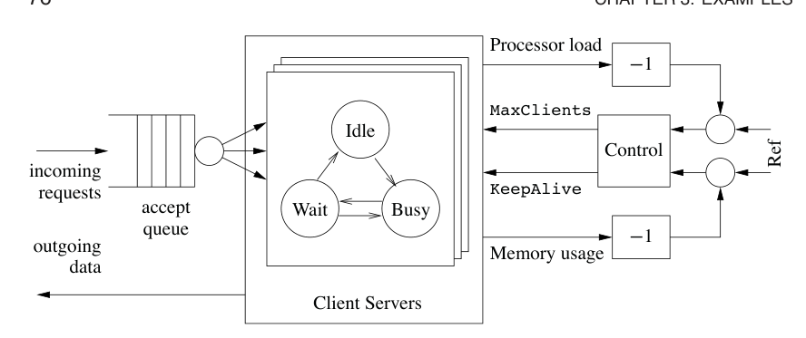
图 3.11 说明了如何用反馈调节 Apache Web 服务器的运行。Web 服务器把传入连接请求放入队列，然后启动子进程来处理每个已接受连接的请求。这个子进程随着给定连接的请求到来而作出响应，在 Busy 状态和 Wait 状态之间切换。请求之间保持子进程活动称为连接的持久性，这可以显著降低同一站点多项信息请求的延迟。如果在由 KeepAlive 参数控制的足够长时间内未收到请求，连接会被丢弃，子进程进入 Idle 状态，随后可被分配给另一个连接。最多会同时服务 MaxClients 个请求，其余请求保留在传入请求队列中。
控制服务器的参数体现了性能和资源使用之间的折中。性能指请求多快得到响应，资源使用指服务器使用多少处理能力和内存。增大 MaxClients 参数，使连接请求可以更快离开队列，但也增加所需处理能力和内存使用。增大 KeepAlive 超时，意味着单个连接可以保持更长空闲时间，这会降低机器处理负载，但增加队列大小，并因而增加用户发起连接所需时间。繁忙服务器的成功运行需要适当选择这些参数，而这种选择常常基于试错。
为了更详细地建模这个系统动态，我们建立一个离散时间模型，其状态为平均处理器负载 \(x_{\mathrm{cpu}}\) 和内存使用百分比 \(x_{\mathrm{mem}}\)。系统输入取为最大客户端数 \(u_{\mathrm{mc}}\) 和 keep-alive 时间 \(u_{\mathrm{ka}}\)。如果假设平衡点附近有线性模型，则动态可写为
其中 \(A\) 和 \(B\) 矩阵的系数可由经验测量或对 Web 服务器处理与内存使用的详细建模确定。Diao 等人 [59, 97] 使用系统辨识得到线性化动态：
系统在线性化时使用的平衡点为
这个模型显示了前面描述的基本特征。先看 \(B\) 矩阵，增大 KeepAlive 超时，也就是 \(B\) 矩阵第一列，会降低处理器使用和内存使用，因为连接更具持久性，服务器花更多时间等待连接关闭，而不是接收新的活动连接。MaxClients 连接则会增加处理和内存需求。注意，对处理器负载影响最大的因素是 KeepAlive 超时。\(A\) 矩阵告诉我们，在平衡点附近状态空间区域内，处理器和内存使用如何演化。对角项描述单个资源在瞬态增加或减少之后如何回到平衡。非对角项显示两个资源之间存在耦合，因此一个资源变化可能引起另一个资源随后变化。
虽然这个模型很简单，后面的例子会看到，它可用于实时修改控制服务器的参数，并对机器负载中的不确定性提供鲁棒性。类似机制也用于其他类型服务器。记住模型假设及其在判断模型何时有效时的作用很重要。特别是，由于我们选择使用给定采样时间上的平均量，该模型无法准确表示高频现象。
拥塞控制
互联网的创建，是为了获得一个大型、高度分散、高效且可扩展的通信系统。系统由大量互连网关组成。消息被分成若干数据包，它们通过网络中的不同路径传输，并在接收端重新组合以恢复消息。收到数据包时，接收方会向发送方发回确认消息 ack。系统运行由一种简单但强大的分散控制结构管理，并且该结构随时间演化。
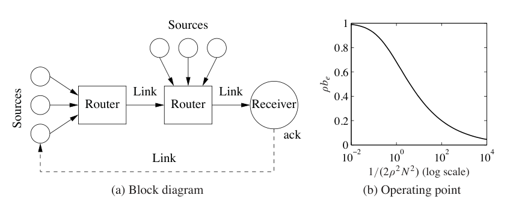
系统有两种称为协议的控制机制：传输控制协议 TCP 用于端到端网络通信，互联网协议 IP 用于路由数据包，以及主机到网关或网关到网关通信。当前协议是在 20 世纪 80 年代中期一些严重拥塞崩溃之后演化出来的，当时吞吐量会意外下降 1000 倍 [108]。TCP 中的控制机制基于守恒从发送方到接收方再回到发送方这一回路中的数据包数量。当没有拥塞时，发送速率指数式增加；当发生拥塞时，发送速率下降到较低水平。
为了推导拥塞控制的整体模型，我们分别建模系统的三个元素：单个源，也就是计算机，发送数据包的速率；链路，也就是路由器中队列的动态；以及队列的准入控制机制。图 3.12a 是系统框图。
互联网上当前源控制机制是一种称为 TCP/Reno 的协议 [137]。该协议向接收方发送数据包，并等待接收方发回确认，表示数据包已经到达。如果在某个超时时间内没有确认，该数据包会被重新发送。为了避免发送下一个数据包前必须等待确认，Reno 会围绕最新已确认的数据包，在固定窗口内发送多个数据包。如果窗口长度选择得当，窗口开头的数据包会在源发送窗口末端的数据包之前获得确认，使计算机能够以高速率连续发送数据包流。
为了确定使用多大窗口，TCP/Reno 使用一个反馈机制。粗略地说，每当一个数据包被确认，窗口大小增加 1；当数据包丢失时，窗口大小减半。这个机制允许窗口大小动态调整，使每台计算机在数据包能够送达时表现得很贪心，而在发生拥塞时迅速退让。
可以通过描述窗口大小动态来建立源行为模型。假设有 \(N\) 台计算机，令 \(w_i\) 为第 \(i\) 台计算机的当前窗口大小，以数据包数量计。令 \(q_i\) 表示一个数据包在源与接收方之间某处被丢弃的端到端概率。窗口大小动态可由微分方程建模为
其中 \(\tau_i\) 是数据包到达目的地并使确认发回的端到端传输时间，\(r_i\) 是数据包从已接收列表中清除的速率。动态中的第一项表示收到数据包时窗口大小增加，第二项表示数据包丢失时窗口大小减小。注意，\(r_i\) 在时刻 \(t-\tau_i\) 处取值，表示接收更多确认所需的时间。
链路动态由路由器队列动态和队列准入控制机制共同控制。假设网络中有 \(L\) 条链路，并用 \(l\) 标记单条链路。我们根据路由器缓冲区中当前数据包数量 \(b_l\) 建模队列，并假设路由器最多可包含 \(b_{l,\max}\) 个数据包，且以速率 \(c_l\) 传输数据包，该速率等于链路容量。于是缓冲区动态可写为
其中 \(L_i\) 是源 \(i\) 所使用的链路集合，\(\tau^f_{li}\) 是源 \(i\) 的数据包到达链路 \(l\) 所需时间，\(s_l\) 是数据包到达链路 \(l\) 的总速率。
准入控制机制决定路由器是否接受给定数据包。由于模型基于网络中的平均量而非单个数据包，一个简单模型是假设数据包被丢弃的概率取决于缓冲区有多满：\(p_l=m_l(b_l,b_{\max})\)。为简单起见，暂时假设 \(p_l=\rho_lb_l\)，更详细模型见习题 3.6。给定链路上数据包被丢弃的概率，可用于确定数据包传输中端到端丢失概率：
其中 \(\tau^b_{li}\) 是从链路 \(l\) 到源 \(i\) 的反向延迟。只要单条链路丢包概率较小，这个近似就有效。这里使用反向延迟，因为它表示确认数据包被源接收所需时间。
式 (3.16)、(3.17) 和 (3.18) 合起来给出拥塞控制动态模型。通过考虑一个特殊情形，可以获得大量洞见：有 \(N\) 个相同源和一条链路。此外，暂时忽略前向和后向时间延迟，此时动态可化为
其中 \(w_i\in\mathbb{R}, i=1,\ldots,N\)，是数据源窗口大小，\(b\in\mathbb{R}\) 是路由器当前缓冲区大小，\(\rho\) 控制数据包被丢弃的速率，\(c\) 是连接路由器和计算机的链路容量。变量 \(\tau\) 表示根据缓冲区大小和链路容量确定的、路由器处理一个数据包所需时间。把 \(\tau\) 代入方程，可把状态空间动态写成
通过令 \(\dot w_i=\dot b=0\)，可以找到系统标称工作点：
利用所有源动态相同这一事实，可知所有 \(w_i\) 都应相同，并且可以证明存在唯一平衡满足
第二个方程的解有些繁琐，但很容易数值确定。图 3.12b 显示它的解如何随 \(1/(2\rho^2N^2)\) 变化。还注意到，在平衡时有如下额外等式：
图 3.13 显示 60 个源通过一条链路通信的仿真，其中 20 个源在 \(t=500\) ms 时退出，其余源增加速率，也就是窗口大小，来补偿。注意，缓冲区大小和窗口大小会自动调节以匹配链路容量。
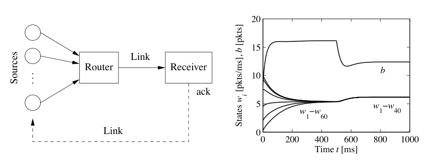
Tannenbaum 的教材 [189] 对计算机网络作了全面处理。互联网设计者之一 Van Jacobson 在 [108] 中很好地介绍了互联网控制原则背后的思想。F. Kelly [120] 给出了系统分析方面的早期工作。Hellerstein 等人的书 [97] 给出了许多在计算机系统中使用反馈的例子。
3.5 原子力显微镜
1986 年诺贝尔物理学奖由 格尔德·宾尼希和海因里希·罗雷尔 共同获得，以表彰他们设计扫描隧道显微镜。这种仪器的思想，是把原子级尖锐的探针尖端靠近导电表面，使隧穿发生。通过让探针尖端横向扫过样品，并测量隧穿电流如何随探针位置变化，可以得到图像。这项发明推动了一系列仪器的发展，使人们能够在纳米尺度上观察表面结构，其中包括原子力显微镜 AFM。AFM 使用悬臂梁上的尖端探测样品。AFM 可以在两种模式下运行。在轻敲模式中，悬臂梁振动，振动幅值由反馈控制。在接触模式中，悬臂梁与样品接触，其弯曲由反馈控制。两种情况下，控制都通过压电元件执行，压电元件控制悬臂梁基座或样品的竖直位置。控制系统直接影响图像质量和扫描速率。
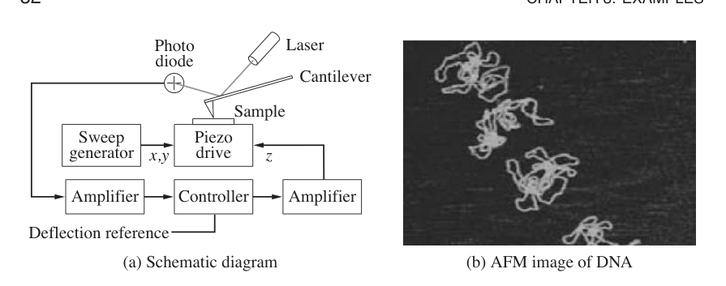
图 3.14a 给出了原子力显微镜的示意图。一个尖端半径约为 10 nm 的微悬臂梁被置于样品附近。尖端可以用压电扫描器进行竖直和水平移动。它通过吸引性的范德瓦尔斯力和排斥性的泡利力贴近样品表面。悬臂梁倾斜取决于表面形貌和悬臂梁基座位置，而基座位置由压电元件控制。倾斜通过光电二极管感知激光束偏转来测量。来自光电二极管的信号被放大并送入控制器，控制器驱动悬臂梁竖直位置放大器。通过控制压电元件，使悬臂梁偏转保持恒定，驱动压电元件竖直偏转的信号就成为悬臂梁尖端与样品原子之间原子力的度量。沿样品扫描悬臂梁即可得到表面图像。其分辨率使人们能够在原子尺度上看到样品结构，如图 3.14b 的 DNA AFM 图像所示。
AFM 的水平运动通常建模为低阻尼弹簧质量系统。竖直运动更复杂。为了建模系统，我们从图 3.15 所示框图开始。容易访问的信号包括驱动压电元件的功率放大器输入电压 \(u\)、施加到压电元件的电压 \(v\)，以及光电二极管信号放大器输出电压 \(y\)。控制器是由计算机实现的 PI 控制器，计算机通过模数转换器 A/D 和数模转换器 D/A 与系统连接。图中也显示了悬臂梁偏转 \(\phi\)。偏转的期望参考值是计算机的输入。
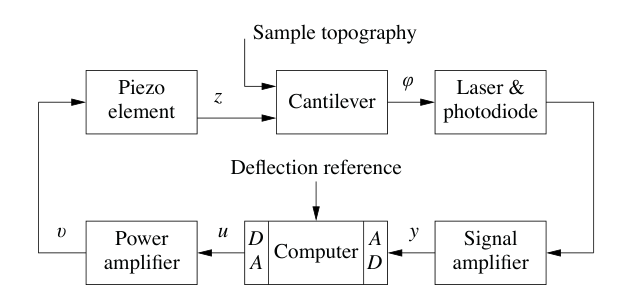
不同配置会有不同动态。这里讨论文献 [176] 中的一个高性能系统，其中悬臂梁基座用压电堆进行竖直定位。我们用一个简单实验开始建模。图 3.16a 显示扫描器从功率放大器输入电压 \(u\) 到光电二极管信号放大器输出电压 \(y\) 的阶跃响应。这个实验捕捉了图 3.15 框图中从 \(u\) 到 \(y\) 的方框链动态。图 3.16a 显示，系统响应很快，但有一个阻尼很差的振荡模态，周期约为 35 微秒。建模的一个主要任务，是理解振荡行为的来源。为此，我们需要更详细地考察系统。
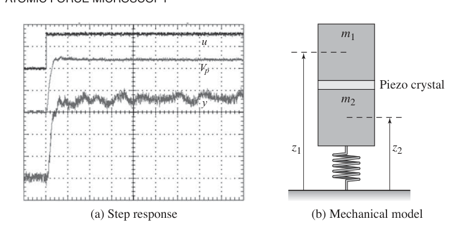
夹紧悬臂梁的固有频率通常为几百千赫兹，远高于观察到的约 30 kHz 振荡。作为一阶近似，我们把它建模为静态系统。由于偏转很小，可以假设悬臂梁弯曲 \(\phi\) 与探针处悬臂梁尖端和压电扫描器之间的高度差成正比。更准确的模型可以把悬臂梁建模为第 2 章讨论过的弹簧质量系统。
图 3.16a 还显示，功率放大器响应很快。光电二极管和信号放大器也具有快速响应，因此可建模为静态系统。剩下的方框是带悬挂的压电系统。图 3.16b 显示扫描器竖直运动的示意机械表示。我们把系统建模为由理想压电元件隔开的两个质量。质量 \(m_1\) 是压电系统的一半，质量 \(m_2\) 是压电系统的另一半加支撑结构质量。
一个简单模型假设压电晶体在两个质量之间产生力 \(F\)，并且弹簧中有阻尼 \(c\)。令两个质量中心的位置为 \(z_1\) 和 \(z_2\)。动量平衡给出系统模型：
令压电元件伸长 \(l=z_1-z_2\) 为控制变量，悬臂梁基座高度 \(z_1\) 为输出。消去 \(F\)，并用 \(z_1-l\) 替换 \(z_2\)，得到模型
总结来说，系统的简单模型可通过用式 (3.23) 建模压电元件，并把所有其他方框建模为静态模型得到。引入线性方程 \(l=k_3u\) 和 \(y=k_4z_1\)，即可得到从控制信号 \(u\) 到输出 \(y\) 的完整模型。更准确的模型可以加入悬臂梁和功率放大器的动态。与前面例子一样，图 2.15b 中的不确定性柠檬概念为描述不确定性提供框架：模型在最高已建模模态频率以下，以及线性化刚度模型适用的运动范围内是准确的。
图 3.16a 的实验结果可以定性解释如下。当电压施加到压电元件时，它伸长 \(l_0\)，质量 \(m_1\) 立即向上运动，质量 \(m_2\) 立即向下运动。系统随后经过一个阻尼很差的振荡而稳定下来。
为竖直运动设计控制系统，使其响应快速且振荡很小，是非常理想的。仪器设计者有几种选择：接受振荡并采用较慢响应时间；设计能够阻尼振荡的控制系统；或者重新设计机械结构，使共振频率更高。后两种方案能带来更快响应和更快成像。
由于系统动态行为会随样品性质而改变，反馈回路需要整定。在简单系统中，目前通常通过手动调节 PI 控制器参数来完成。通过引入自动整定和自适应，可以让 AFM 系统更易使用，这里有很有趣的可能性。
Sarid 的书 [173] 对原子力显微镜作了广泛介绍。表面附近原子的相互作用是固体物理的基本内容，见 Kittel [125]。本节讨论的模型基于 Schitter [175]。
3.6 药物给药
每天三次，每次两片，是我们都熟悉的建议。这个建议背后，是一个开环控制问题的解。关键问题是，确保身体某一部位的药物浓度足够高，从而产生效果，但又不能高到引起不希望的副作用。控制动作被量化为服两片，并以每 8 小时一次采样。处方基于经验表中的简单模型，剂量则基于患者年龄和体重。
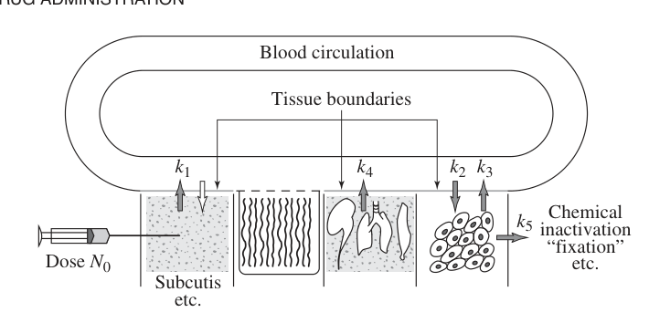
药物给药是一个控制问题。要解决它，必须理解药物给入后如何在体内扩散。这个主题称为药代动力学，如今已经成为独立学科，所用模型称为隔室模型。它们可追溯到 20 世纪 20 年代，当时 Widmark 建模了酒精在体内的传播 [199]。隔室模型如今对所有人体用药的筛选都很重要。图 3.17 的示意图说明了隔室模型的思想。身体被视为若干隔室，例如血浆、肾脏、肝脏和组织，它们由膜分隔。假设每个隔室内完全混合，因此药物浓度在各自隔室中恒定。复杂运输过程通过假设隔室之间流率与浓度差成正比来近似。
为了描述药物效果，必须知道它的浓度以及它如何影响身体。浓度 \(c\) 与效果 \(e\) 之间的关系通常是非线性的。一个简单模型为
低浓度时效果近似线性，高浓度时效果饱和。该关系也可以是动态的，此时称为药效动力学。
隔室模型
药物给药的最简单动态模型，假设药物给入后均匀分布在单个隔室中，并且药物以与浓度成正比的速率被移除。隔室表现得像完全混合的搅拌罐。令 \(c\) 为浓度，\(V\) 为体积，\(q\) 为流出速率。把系统描述转换成微分方程，得到模型
这个方程的解为 \(c(t)=c_0e^{-qt/V}=c_0e^{-kt}\)，说明注射之后浓度按时间常数 \(T=V/q\) 指数衰减。输入在模型 (3.25) 中隐式地作为初始条件引入。更一般地，输入如何进入模型取决于给药方式。例如，输入可以表示为药物注入隔室的质量流。被溶解的药片也可以解释为质量流率意义下的输入。
模型 (3.25) 称为单隔室模型或单池模型。参数 \(q/V\) 称为消除速率常数。这个简单模型常用于建模血浆中的浓度。通过在若干时刻测量浓度，可以外推得到初始浓度。如果已知注入物质总量，则可由 \(V=m/c_0\) 确定体积 \(V\)。这个体积称为表观分布容积。如果血浆中的浓度低于身体其他部分中的浓度，该体积会大于真实体积。模型 (3.25) 非常简单，参数存在很大的个体差异。参数 \(V\) 和 \(q\) 常通过除以人的体重来归一化。阿司匹林的典型参数为 \(V=0.2\) L/kg，\(q=0.01\) (L/h)/kg。这些数字可与血容量 0.07 L/kg、血浆容量 0.05 L/kg、细胞内液容量 0.4 L/kg，以及流出率 0.0015 L/min/kg 比较。
简单单隔室模型捕捉了药物分布的大体行为，但它基于许多简化。通过把身体视为由多个隔室组成，可以得到改进模型。图 3.18 显示这类系统的例子，其中隔室用圆表示，流动用箭头表示。
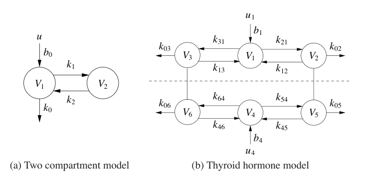
下面用图 3.18a 中的双隔室模型说明建模。假设每个隔室内完全混合，且隔室之间的运输由浓度差驱动。进一步假设浓度为 \(c_0\) 的药物以体积流率 \(u\) 注入隔室 1，且隔室 2 中的浓度为输出。令 \(c_1,c_2\) 为两个隔室中的药物浓度，\(V_1,V_2\) 为隔室体积。隔室的质量平衡为
引入变量 \(k_0=q_0/V_1\)、\(k_1=q/V_1\)、\(k_2=q/V_2\) 和 \(b_0=c_0/V_1\)，并使用矩阵记号，模型可写为
把这个模型与图 3.18a 中的图形表示比较，可以发现数学表示 (3.27) 可通过观察直接写出。
还应强调，式 (3.27) 这类简单隔室模型的有效范围有限。低频限制存在，因为人体会随时间变化；由于隔室模型使用平均浓度，它们无法准确表示快速变化。影响隔室间运输的非线性效应也存在。
隔室模型广泛用于医学、工程和环境科学。这类系统的一个有趣性质是，浓度和质量等变量总是正的。隔室建模中的一个基本困难，是决定如何把复杂系统划分为隔室。隔室模型也可以是非线性的，下一节对此作出说明。
胰岛素葡萄糖动态
人体血糖浓度必须维持在狭窄范围内，约为 0.7 到 1.1 g/L，这是很重要的。葡萄糖浓度受许多因素影响，例如进食、消化和运动。图 3.19a 与 b 显示相关身体部位的示意图。
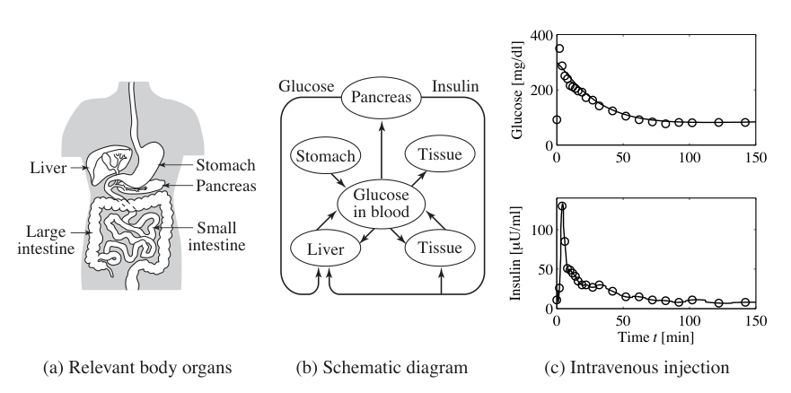
调节葡萄糖浓度有一套复杂机制。葡萄糖浓度由胰腺维持，胰腺分泌胰岛素和胰高血糖素。葡萄糖水平低时，胰高血糖素释放到血液中，它作用于肝脏细胞，使其释放葡萄糖。葡萄糖水平高时，胰岛素被分泌，促使肝脏和其他细胞摄取更多葡萄糖，从而降低葡萄糖水平。在青少年糖尿病等疾病中，胰腺无法产生胰岛素，患者必须向体内注射胰岛素以维持适当葡萄糖水平。
调节葡萄糖和胰岛素的机制很复杂，人们已经观察到时间尺度从秒到小时的动态。已有不同复杂度的模型被发展出来。模型通常通过实验数据检验，在实验中葡萄糖被静脉注射，随后定期测量胰岛素和葡萄糖浓度。
Bergman 及其合作者发展了一个相对简单的最小模型 [31]。该模型使用两个隔室，一个表示血液循环中的葡萄糖浓度，另一个表示间质液中的胰岛素浓度。血液循环中的胰岛素被视为输入。葡萄糖对胰岛素的反应可由方程建模为
其中 \(g_e\) 和 \(i_e\) 分别表示葡萄糖与胰岛素的平衡值，\(x_1\) 是葡萄糖浓度，\(x_2\) 与间质胰岛素浓度成正比。注意第一个方程中存在项 \(x_2x_1\)。还要注意，该模型没有捕捉完整反馈回路，因为它没有描述胰腺如何对葡萄糖作出反应。图 3.19c 显示该模型对一个正常人测试数据的拟合，其中葡萄糖在时刻 \(t=0\) 被静脉注射。葡萄糖浓度快速升高，胰腺以快速尖峰状胰岛素注入作出响应。随后，葡萄糖和胰岛素水平逐渐接近平衡值。
人们已经发展并使用实验数据拟合了式 (3.28) 类型的模型，以及具有多个隔室的更复杂模型。建模中的一个困难是，不同时间和不同患者之间，模型参数存在显著差异。例如，据报道式 (3.28) 中参数 \(p_1\) 在健康个体中可变化一个数量级。这些模型已用于诊断，并用于发展疾病患者的治疗方案。由于缺乏可靠传感器，发展完全自动人工胰腺的尝试一直受到阻碍。
Widmark 与 Tandberg [199]、Teorell [190] 的论文是药代动力学中的经典文献。药代动力学如今已经是一门成熟学科，有许多教材 [62, 109, 84]。由于医学重要性，药代动力学现在是药物开发的基本组成部分。Riggs 的书 [168] 是生理系统建模的良好来源，文献 [119] 给出了更数学化的处理。隔室模型见 [85]。从实验数据确定速率系数的问题见 [26] 和 [85]。胰岛素葡萄糖模型有许多发表文献。最小模型见 [52, 31]，较新的参考文献包括 [143, 72]。
3.7 种群动态
种群增长是一个复杂动态过程，涉及一个或多个物种与其环境及更大生态系统之间的相互作用。种群群体动态在许多社会政策和环境政策领域都很有趣，也很重要。历史上有一些例子，人们把新物种引入新栖息地，有时造成灾难性结果。人们也曾试图通过激励或立法控制种群增长。本节描述一些模型，用于理解种群如何随时间和环境变化而演化。
逻辑斯蒂增长模型
令 \(x\) 表示时刻 \(t\) 某个物种的种群数量。一个简单模型假设出生率和死亡率都与总种群数量成正比。这给出线性模型
其中出生率 \(b\) 和死亡率 \(d\) 是参数。如果 \(b>d\)，模型给出指数增长；如果 \(b<d\)，模型给出指数下降。更现实的模型是假设当种群很大时出生率下降。下面对模型 (3.29) 的修改具有这一性质：
其中 \(k\) 是环境承载能力。模型 (3.30) 称为 逻辑斯蒂增长模型。
捕食者猎物模型
更复杂的种群动态模型包括竞争种群的影响，其中一个物种可能以另一个物种为食。这种情形称为捕食者猎物问题，例 2.3 已经介绍过。当时我们发展了一个离散时间模型，捕捉了猞猁和野兔种群历史记录中的一些特征。
本节中，我们用更复杂的微分方程模型替代那里的差分方程模型。令 \(H(t)\) 表示野兔数量，也就是猎物，令 \(L(t)\) 表示猞猁数量，也就是捕食者。系统动态建模为
在第一个方程中，\(r\) 表示野兔增长率，\(k\) 表示没有猞猁时野兔的最大种群数量，\(a\) 表示相互作用项，描述野兔如何随猞猁种群减少，\(c\) 控制低野兔种群时的猎物消费率。在第二个方程中，\(b\) 表示猞猁增长系数，\(d\) 表示猞猁死亡率。注意，野兔动态包括一个类似 逻辑斯蒂增长模型 (3.30) 的项。
我们特别感兴趣的是使种群值保持恒定的取值，称为平衡点。这个系统的平衡点可通过令上述方程右端为零来确定。令 \(H_e\) 和 \(L_e\) 表示平衡状态，由第二个方程得到
把它代入第一个方程，如果 \(L_e=0\)，则有 \(H_e=0\) 或 \(H_e=k\)。对 \(L_e\ne0\)，得到
因此有三个可能平衡点 \(x_e=(H_e,L_e)\)：
注意，对某些参数值，平衡种群可能为负，这对应不可达到的平衡点。
图 3.20 显示从一组接近非零平衡值的种群值出发得到的动态仿真。可以看到，对这组参数，仿真预测两个物种的种群数量都会振荡，这让人想起图 2.6 所示的数据。
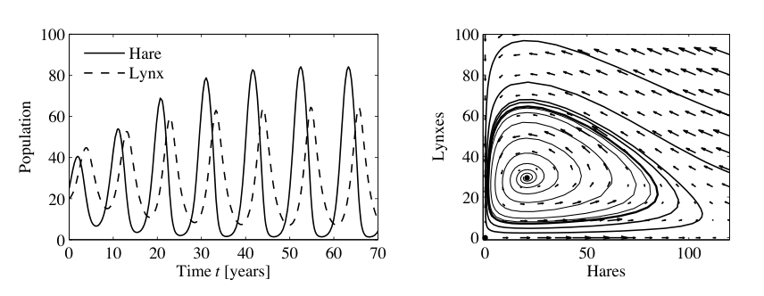
J. D. Murray 两卷本著作的第一卷 [154] 对种群动态作了广泛介绍。
习题
3.1 巡航控制。考虑第 3.1 节描述的巡航控制例子。构建仿真，重现图 3.3b 中对坡道的响应，并展示汽车质量增加和减少 25% 的影响。重新设计控制器，可以用试错，使系统在遇到坡道起点后 3 s 内回到期望速度的 10% 范围内。
3.2 自行车动态。证明式 (3.5) 给出的自行车车架动态可近似写成状态空间形式：
其中输入 \(u\) 是转向角 \(\delta\)，输出 \(y\) 是倾斜角 \(\phi\)。状态 \(x_1\) 和 \(x_2\) 分别表示什么？
3.3 自行车转向。把式 (3.5) 给出的自行车模型与例 2.8 中的转向运动学模型结合起来，得到一个描述自行车质心路径的模型。
3.4 运算放大器电路。考虑下图所示的运放电路。证明动态可写成状态空间形式
其中 \(u=v_1\)，\(y=v_3\)。提示：使用 \(v_2\) 和 \(v_3\) 作为状态变量。
3.5 运算放大器振荡器。下图所示运放电路是一个振荡器的实现。证明动态可写成状态空间形式
其中状态变量表示电容两端电压，\(x_1=v_1\)，\(x_2=v_2\)。
3.6 使用 RED 的拥塞控制 [138]。第 3.4 节中提出的互联网拥塞控制模型可以做若干改进。为了确保路由器缓冲区大小保持为正，可以修改缓冲区动态，使其满足
此外，可以根据缓冲区距离极限的接近程度来建模数据包丢弃概率，这种机制称为随机早期检测 RED：
其中 \(\alpha_l,b_l^{\mathrm{upper}},b_l^{\mathrm{lower}}\) 和 \(p_l^{\mathrm{upper}}\) 是 RED 协议参数。使用上述模型编写系统仿真，并找出一组使系统具有稳定平衡点的参数，以及一组使系统表现出振荡解的参数。应探索如下参数集合：
3.7 带压电管的原子力显微镜。下图显示竖直扫描器为带预载压电管的 AFM 示意图。证明动态可写为
是否存在使动态特别简单的参数值？
3.8 药物给药。酒精在体内的代谢可由非线性隔室模型描述：
其中 \(V_b=48\) L 和 \(V_l=0.6\) L 是身体水分和肝脏水分的表观分布容积，\(c_b,c_l\) 是两个隔室中的酒精浓度，\(q_{\mathrm{iv}},q_{\mathrm{gi}}\) 是静脉给入和胃肠摄入的注入速率，\(q=1.5\) L/min 是总肝血流量，\(q_{\max}=2.75\) mmol/min，\(c_0=0.1\) mmol/L。仿真系统，并计算口服和静脉给入 12 g 与 40 g 酒精时血液中的浓度。
3.9 种群动态。考虑式 (3.30) 给出的 逻辑斯蒂增长模型。证明最大增长率出现在种群大小为稳态值一半时。
3.10 渔业管理。商业渔业动态可由如下简单模型描述：
其中 \(x\) 是总生物量，\(f(x)=rx(1-x/k)\) 是增长率，\(h(x,u)=axu\) 是捕捞率。输出 \(y\) 是收入速率，参数 \(a,b,c\) 是表示鱼价和捕捞成本的常数。证明存在一个稳态生物量为 \(x_e=c/(ab)\) 的平衡。与把生物量调节为常值时的情形作比较，并找出那种情况下的最大可持续收益。